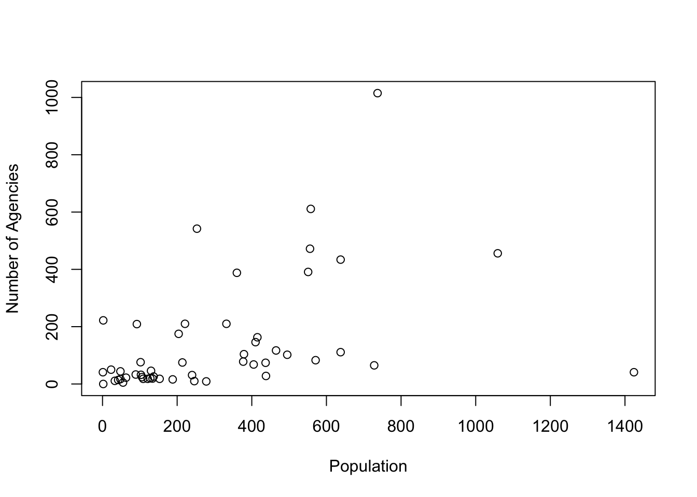
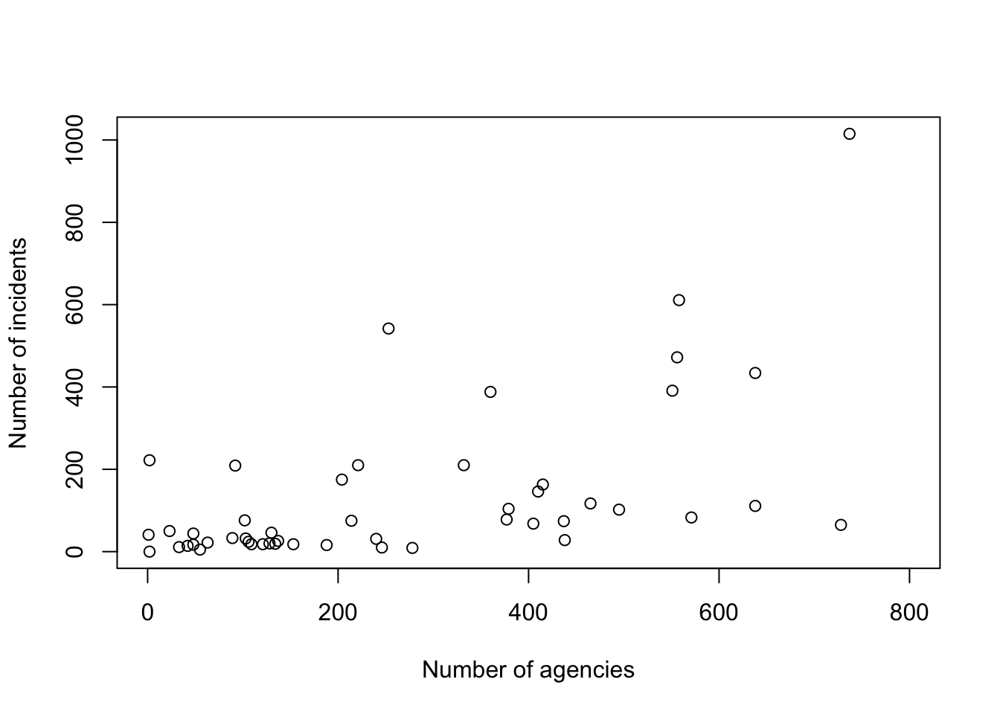
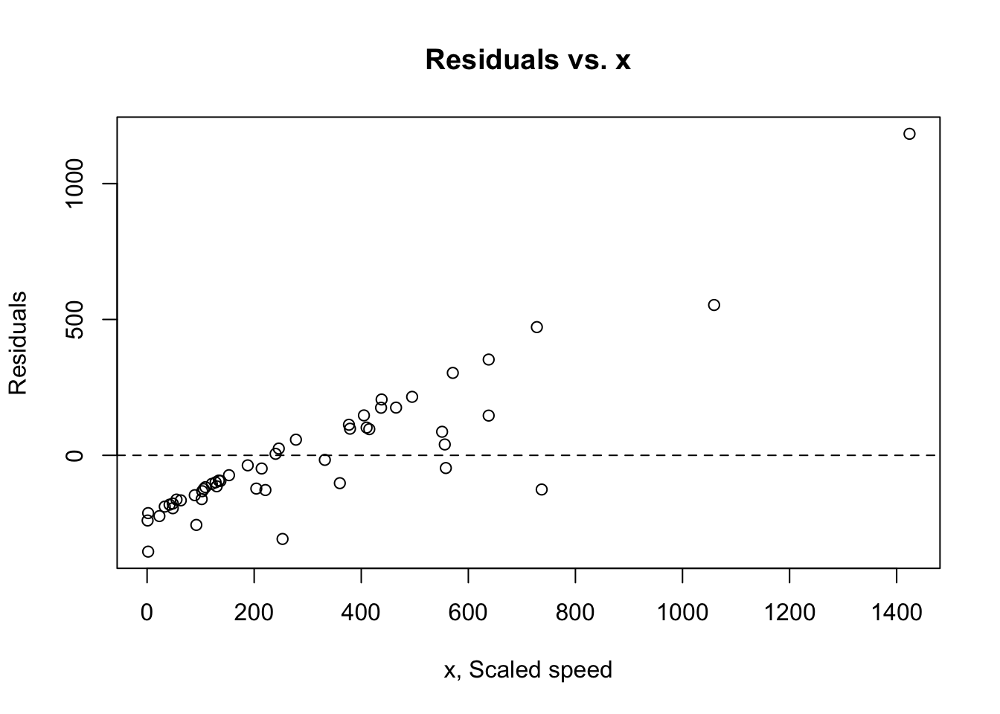
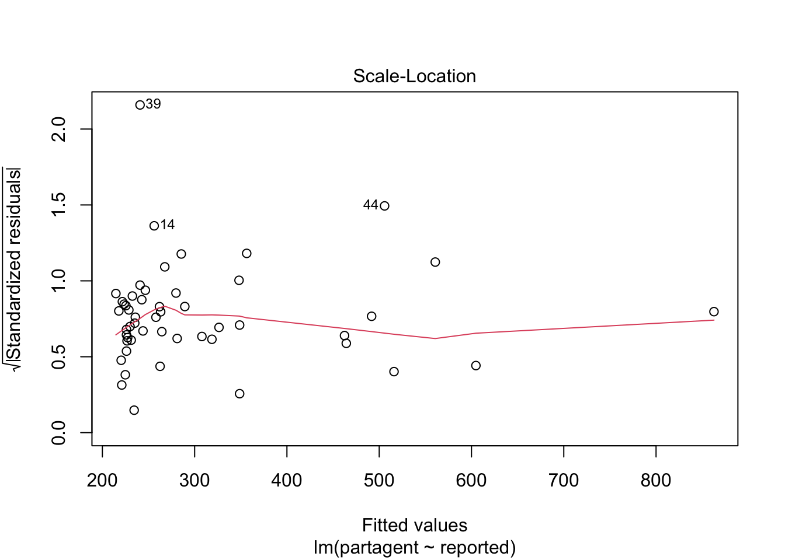
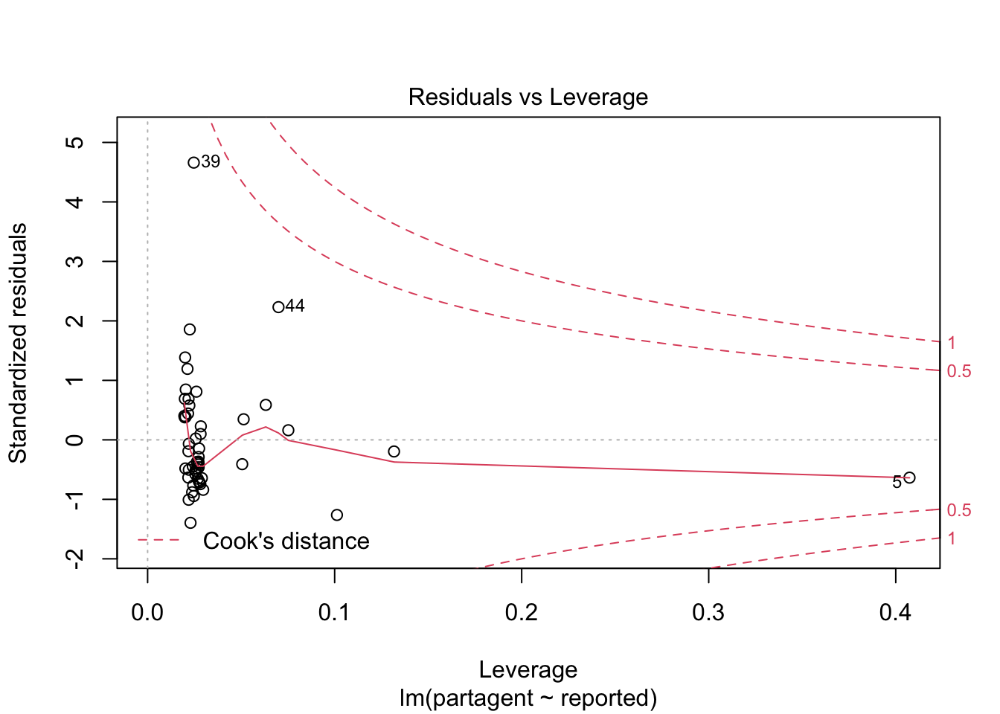
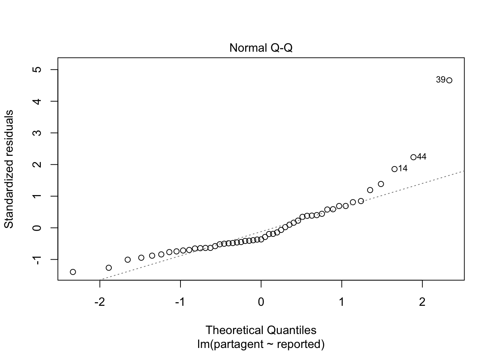
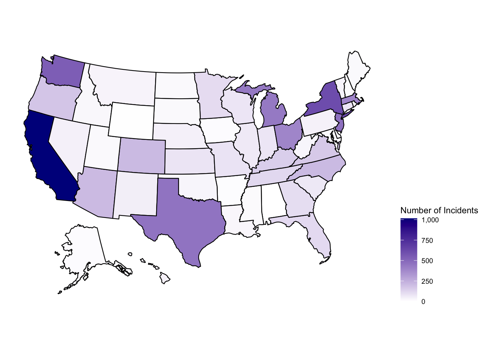
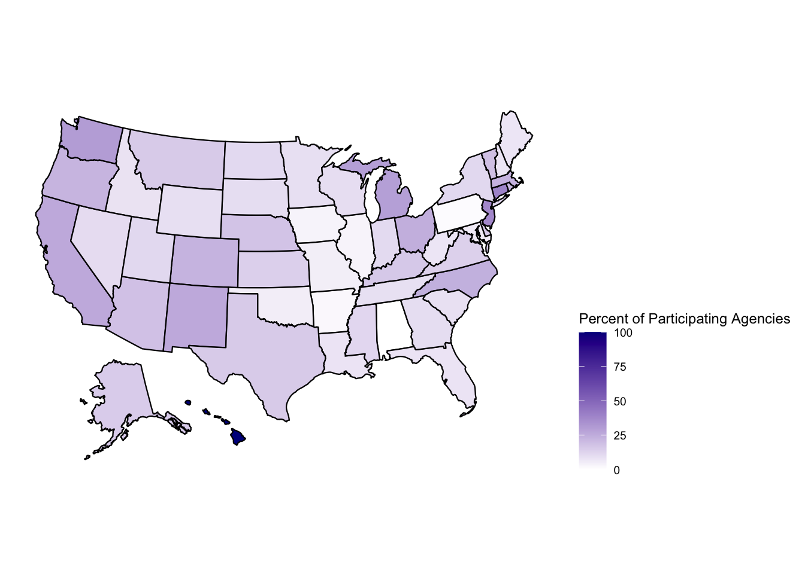
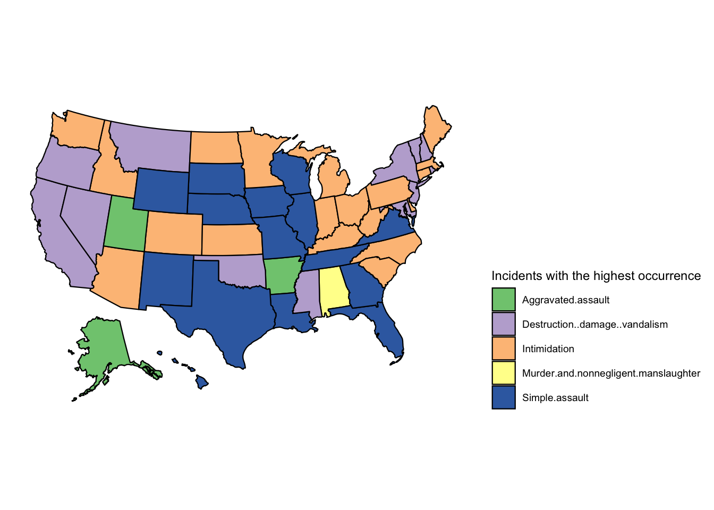

summary(table12)## Participating.state.Federal Number.of.participating.agencies
## Length:51 Length:51
## Class :character Class :character
## Mode :character Mode :character
##
##
##
## Population.covered Agencies.submitting.incident.reports
## Length:51 Min. : 0.00
## Class :character 1st Qu.: 10.00
## Mode :character Median : 22.00
## Mean : 41.65
## 3rd Qu.: 50.50
## Max. :208.00
## Total.number.of.incidents.reported
## Length:51
## Class :character
## Mode :character
##
##
## table12$Number.of.participating.agencies <-
as.integer(gsub(",", "", table12$Number.of.participating.agencies))
table12$Population.covered <-
as.integer(gsub(",", "", table12$Population.covered))
table12$Total.number.of.incidents.reported <-
as.integer(gsub(",","",table12$Total.number.of.incidents.reported))
summary(table12)## Participating.state.Federal Number.of.participating.agencies
## Length:51 Min. : 1.0
## Class :character 1st Qu.: 102.5
## Mode :character Median : 221.0
## Mean : 304.7
## 3rd Qu.: 437.5
## Max. :1424.0
## Population.covered Agencies.submitting.incident.reports
## Min. : 85670 Min. : 0.00
## 1st Qu.: 1185942 1st Qu.: 10.00
## Median : 3643904 Median : 22.00
## Mean : 5985965 Mean : 41.65
## 3rd Qu.: 7209156 3rd Qu.: 50.50
## Max. :39502561 Max. :208.00
## Total.number.of.incidents.reported
## Min. : 0
## 1st Qu.: 21
## Median : 65
## Mean : 141
## 3rd Qu.: 169
## Max. :1015## [1] 0.7281031percent_participate_table <- data.frame(table12$Participating.state.Federal,
table12$Agencies.submitting.incident.reports,
table12$Number.of.participating.agencies)
colnames(percent_participate_table) <- c('States', 'Agencies Submitting Reports'
, "Agencies Participating")
percent_participate_table = transform(percent_participate_table,
freq = (percent_participate_table$`Agencies Submitting Reports`/percent_participate_table$`Agencies Participating`)*100)<there is a correlation -> Lets see if we can predict the n>
plot(table12$Number.of.participating.agencies, table12$Total.number.of.incidents.reported,
xlab="Population", ylab="Number of Agencies")
plot(table12$Number.of.participating.agencies, table12$Total.number.of.incidents.reported,
xlab="Number of agencies",
ylab="Number of incidents",
xlim = range(0, 800))
cor(table12$Number.of.participating.agencies, table12$Total.number.of.incidents.reported)## [1] 0.4458242partagent <-table12$Number.of.participating.agencies
reported <-table12$Total.number.of.incidents.reported
lm_agencies_report <- lm(formula = partagent ~ reported,
data = table12)
summary(lm_agencies_report)##
## Call:
## lm(formula = partagent ~ reported, data = table12)
##
## Residuals:
## Min 1Q Median 3Q Max
## -354.40 -153.95 -92.78 100.04 1183.17
##
## Coefficients:
## Estimate Std. Error t value Pr(>|t|)
## (Intercept) 214.6460 44.2994 4.845 0.0000131 ***
## reported 0.6385 0.1831 3.486 0.00104 **
## ---
## Signif. codes: 0 '***' 0.001 '**' 0.01 '*' 0.05 '.' 0.1 ' ' 1
##
## Residual standard error: 257.1 on 49 degrees of freedom
## Multiple R-squared: 0.1988, Adjusted R-squared: 0.1824
## F-statistic: 12.16 on 1 and 49 DF, p-value: 0.001043plot(partagent, lm_agencies_report$residuals, main="Residuals vs. x", xlab="x, Scaled speed", ylab="Residuals")
abline(h = 0, lty="dashed")
plot(lm_agencies_report, which=3)
plot(lm_agencies_report, which=5)
plot(lm_agencies_report, which=2) <a regression isn’t valid so we can’t say that for every predicted agencies that we get more reports>
summary(table11)## Participating.state.Federal Total.offenses
## Length:51 Min. : 0.0
## Class :character 1st Qu.: 28.5
## Mode :character Median : 82.0
## Mean : 164.2
## 3rd Qu.: 195.0
## Max. :1221.0
## Murder.and.nonnegligent.manslaughter Rape Aggravated.assault
## Min. : 0.0000 Min. :0.0000 Min. : 0.00
## 1st Qu.: 0.0000 1st Qu.:0.0000 1st Qu.: 3.00
## Median : 0.0000 Median :0.0000 Median : 9.00
## Mean : 0.6471 Mean :0.5882 Mean : 21.67
## 3rd Qu.: 0.0000 3rd Qu.:0.0000 3rd Qu.: 22.00
## Max. :22.0000 Max. :8.0000 Max. :290.00
## Simple.assault Intimidation Human.Trafficking.Commercial.Sex.Acts
## Min. : 0.00 Min. : 0.00 Min. :0.00000
## 1st Qu.: 6.00 1st Qu.: 4.50 1st Qu.:0.00000
## Median : 18.00 Median : 17.00 Median :0.00000
## Mean : 39.55 Mean : 41.71 Mean :0.05882
## 3rd Qu.: 50.00 3rd Qu.: 42.00 3rd Qu.:0.00000
## Max. :272.00 Max. :264.00 Max. :2.00000
## Other Robbery Burglary Larceny..theft
## Min. :0.0000 Min. : 0.000 Min. : 0.000 Min. : 0.000
## 1st Qu.:0.0000 1st Qu.: 0.000 1st Qu.: 0.000 1st Qu.: 0.000
## Median :0.0000 Median : 1.000 Median : 1.000 Median : 2.000
## Mean :0.8039 Mean : 2.451 Mean : 2.235 Mean : 5.529
## 3rd Qu.:0.5000 3rd Qu.: 2.000 3rd Qu.: 2.500 3rd Qu.: 4.500
## Max. :7.0000 Max. :35.000 Max. :20.000 Max. :80.000
## Motor.vehicle.theft Arson Destruction..damage..vandalism
## Min. :0.0000 Min. :0.000 Min. : 0.00
## 1st Qu.:0.0000 1st Qu.:0.000 1st Qu.: 6.00
## Median :0.0000 Median :0.000 Median : 14.00
## Mean :0.3725 Mean :0.902 Mean : 41.92
## 3rd Qu.:0.0000 3rd Qu.:1.000 3rd Qu.: 43.50
## Max. :7.0000 Max. :9.000 Max. :379.00
## Other.1 Crimes.against.society
## Min. : 0.000 Min. : 0.000
## 1st Qu.: 0.000 1st Qu.: 0.000
## Median : 0.000 Median : 1.000
## Mean : 1.118 Mean : 4.627
## 3rd Qu.: 1.000 3rd Qu.: 5.500
## Max. :11.000 Max. :43.000<total offences in general looking at freq from table 12 to table 11>
table11_total = data.frame(table11$Participating.state.Federal, table11$Total.offenses, percent_participate_table$freq)table11_maxperstate <- data.frame(table11$Participating.state.Federal)
table11_maxperstate['max'] <- apply(table11[3:15], 1, max)
table11_maxperstate['highest occuring crimes'] <- colnames(table11[3:15])[max.col(table11[3:15], ties.method = "first")]
table11_total## table11.Participating.state.Federal table11.Total.offenses
## 1 Alabama 0
## 2 Alaska 17
## 3 Arizona 254
## 4 Arkansas 10
## 5 California 1221
## 6 Colorado 257
## 7 Connecticut 86
## 8 Delaware 27
## 9 District of Columbia 247
## 10 Florida 131
## 11 Georgia 123
## 12 Hawaii 51
## 13 Idaho 38
## 14 Illinois 95
## 15 Indiana 87
## 16 Iowa 13
## 17 Kansas 99
## 18 Kentucky 179
## 19 Louisiana 33
## 20 Maine 24
## 21 Maryland 18
## 22 Massachusetts 441
## 23 Michigan 495
## 24 Minnesota 123
## 25 Mississippi 15
## 26 Missouri 106
## 27 Montana 35
## 28 Nebraska 57
## 29 Nevada 53
## 30 New Hampshire 17
## 31 New Jersey 478
## 32 New Mexico 63
## 33 New York 618
## 34 North Carolina 248
## 35 North Dakota 20
## 36 Ohio 428
## 37 Oklahoma 30
## 38 Oregon 205
## 39 Pennsylvania 50
## 40 Rhode Island 21
## 41 South Carolina 82
## 42 South Dakota 21
## 43 Tennessee 152
## 44 Texas 560
## 45 Utah 34
## 46 Vermont 37
## 47 Virginia 185
## 48 Washington 664
## 49 West Virginia 36
## 50 Wisconsin 83
## 51 Wyoming 6
## percent_participate_table.freq
## 1 0.000000
## 2 15.151515
## 3 18.478261
## 4 2.158273
## 5 26.458616
## 6 22.624434
## 7 39.215686
## 8 15.873016
## 9 100.000000
## 10 7.993730
## 11 10.101010
## 12 100.000000
## 13 8.490566
## 14 3.159341
## 15 10.747664
## 16 3.252033
## 17 14.058355
## 18 16.341463
## 19 8.029197
## 20 7.462687
## 21 5.882353
## 22 23.055556
## 23 29.467085
## 24 9.234828
## 25 11.904762
## 26 4.903678
## 27 15.533981
## 28 17.692308
## 29 10.416667
## 30 7.446809
## 31 37.410072
## 32 26.086957
## 33 11.648746
## 34 24.096386
## 35 11.009174
## 36 24.319419
## 37 5.022831
## 38 22.549020
## 39 1.053371
## 40 20.833333
## 41 8.888889
## 42 10.156250
## 43 9.032258
## 44 15.769594
## 45 11.570248
## 46 19.101124
## 47 13.734940
## 48 30.434783
## 49 7.500000
## 50 9.839817
## 51 9.090909table11_maxperstate## table11.Participating.state.Federal max highest occuring crimes
## 1 Alabama 0 Murder.and.nonnegligent.manslaughter
## 2 Alaska 6 Aggravated.assault
## 3 Arizona 110 Intimidation
## 4 Arkansas 4 Aggravated.assault
## 5 California 330 Destruction..damage..vandalism
## 6 Colorado 70 Intimidation
## 7 Connecticut 37 Intimidation
## 8 Delaware 12 Intimidation
## 9 District of Columbia 113 Simple.assault
## 10 Florida 43 Simple.assault
## 11 Georgia 47 Simple.assault
## 12 Hawaii 23 Simple.assault
## 13 Idaho 14 Intimidation
## 14 Illinois 39 Simple.assault
## 15 Indiana 36 Intimidation
## 16 Iowa 4 Simple.assault
## 17 Kansas 26 Intimidation
## 18 Kentucky 66 Intimidation
## 19 Louisiana 9 Simple.assault
## 20 Maine 17 Intimidation
## 21 Maryland 12 Destruction..damage..vandalism
## 22 Massachusetts 169 Intimidation
## 23 Michigan 152 Intimidation
## 24 Minnesota 35 Intimidation
## 25 Mississippi 3 Destruction..damage..vandalism
## 26 Missouri 33 Simple.assault
## 27 Montana 14 Destruction..damage..vandalism
## 28 Nebraska 16 Simple.assault
## 29 Nevada 15 Destruction..damage..vandalism
## 30 New Hampshire 7 Destruction..damage..vandalism
## 31 New Jersey 267 Destruction..damage..vandalism
## 32 New Mexico 22 Simple.assault
## 33 New York 379 Destruction..damage..vandalism
## 34 North Carolina 91 Intimidation
## 35 North Dakota 8 Intimidation
## 36 Ohio 107 Intimidation
## 37 Oklahoma 11 Destruction..damage..vandalism
## 38 Oregon 60 Destruction..damage..vandalism
## 39 Pennsylvania 18 Intimidation
## 40 Rhode Island 11 Destruction..damage..vandalism
## 41 South Carolina 18 Intimidation
## 42 South Dakota 9 Simple.assault
## 43 Tennessee 37 Simple.assault
## 44 Texas 127 Simple.assault
## 45 Utah 9 Aggravated.assault
## 46 Vermont 23 Destruction..damage..vandalism
## 47 Virginia 55 Simple.assault
## 48 Washington 259 Intimidation
## 49 West Virginia 8 Intimidation
## 50 Wisconsin 25 Simple.assault
## 51 Wyoming 2 Simple.assaultincidents <- data.frame(table12$Participating.state.Federal, as.numeric(gsub(",","",table12$Total.number.of.incidents.reported)))
colnames(incidents) <- c('state', 'Total number of incidents')
plot_usmap(data = incidents, values = "Total number of incidents")+scale_fill_continuous(name = "Number of Incidents",low = "white", high ="darkblue", label = scales::comma) + theme(legend.position = "right")
percent_participate_table <- data.frame(table12$Participating.state.Federal,
table12$Agencies.submitting.incident.reports,
table12$Number.of.participating.agencies)
colnames(percent_participate_table) <- c('state', 'Agencies Submitting Reports'
, "Agencies Participating")
percent_participate_table = transform(percent_participate_table, freq = (percent_participate_table$`Agencies Submitting Reports`/percent_participate_table$`Agencies Participating`)*100)
plot_usmap(data = percent_participate_table, values = "freq")+scale_fill_continuous(name = "Percent of Participating Agencies",low = "white", high ="darkblue", label = scales::comma) + theme(legend.position = "right")
colnames(table11_maxperstate) <- c('state', "max", "incidents")
plot_usmap(data = table11_maxperstate, values = "incidents") + theme(legend.position = "right") + scale_fill_brewer(name = "Incidents with the highest occurrence",type = 'qual', palette = 1) 